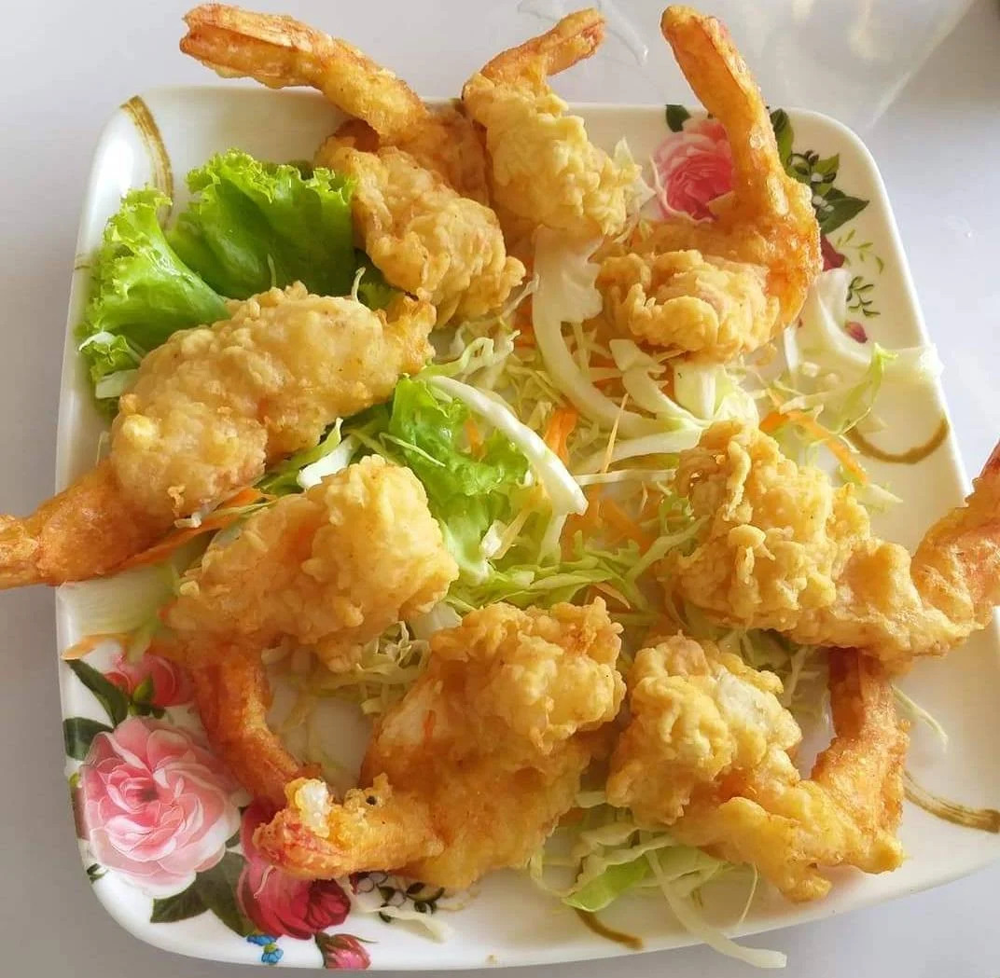

แบบฝึกหัดที่ 2: HTML Form
รหัสนักศึกษา 6440011004 กิตติทัต โพธิ์น้อย

กุ้งชุบแป้งทอด
ส่วนผสม
- กุ้ง =================>ครึ่งกิโล
- แป้งโกกิ =============>1ขีด
- คนอร์ ===============>2ช้อนชา
- น้ำเย็นจัด ============>ครึ่งถ้วย
- น้ำมันสำหรับทอด ======>2ถ้วย
วิธีทำ
เวลาเตรียมส่วนผสม: 15 นาที
เวลาปรุงอาหาร: 15 นาที
- นำกุ้งไปล้างน้ำ แกะเปลือกออกให้เหลือส่วนหางไว้
- ผสมแป้ง โดยใส่แป้งโกกิ ผงปรุงรสคนอร์ และน้ำเย็นจัด คลุกให้เข้ากัน อย่าให้แป้งจัดตัวเป็นเม็ด หากแห้งเกินไปให้เติ่มน้ำอีกได้
- ตั้งน้ำมันให้ร้อน
- นำกุ้งไปชุบแป้ง และนำไปทอด
- ทอดพอเหลือง เอาขึ้นพร้อมเสริฟ
อ่านต่อได้ที่นี่คลิ๊ก
home